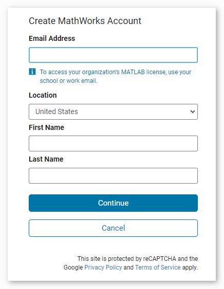
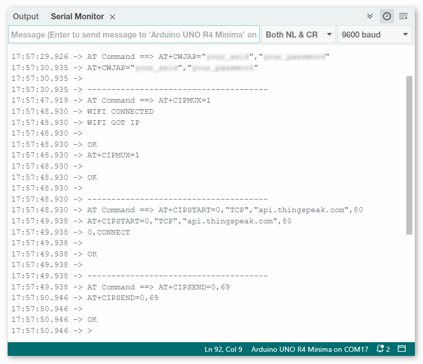
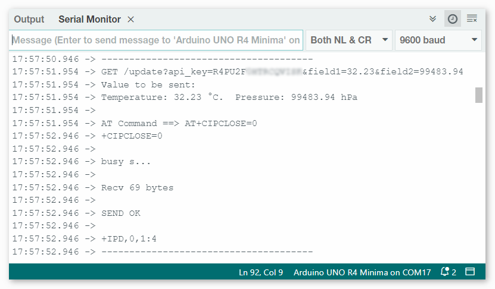

Bemerkung
Hallo und willkommen in der SunFounder Raspberry Pi & Arduino & ESP32 Enthusiasten-Gemeinschaft auf Facebook! Tauchen Sie tiefer ein in die Welt von Raspberry Pi, Arduino und ESP32 mit anderen Enthusiasten.
Warum beitreten?
Expertenunterstützung: Lösen Sie Nachverkaufsprobleme und technische Herausforderungen mit Hilfe unserer Gemeinschaft und unseres Teams.
Lernen & Teilen: Tauschen Sie Tipps und Anleitungen aus, um Ihre Fähigkeiten zu verbessern.
Exklusive Vorschauen: Erhalten Sie frühzeitigen Zugang zu neuen Produktankündigungen und exklusiven Einblicken.
Spezialrabatte: Genießen Sie exklusive Rabatte auf unsere neuesten Produkte.
Festliche Aktionen und Gewinnspiele: Nehmen Sie an Gewinnspielen und Feiertagsaktionen teil.
👉 Sind Sie bereit, mit uns zu erkunden und zu erschaffen? Klicken Sie auf [hier] und treten Sie heute bei!
Wetterüberwachung mit ThingSpeak
Dieses Projekt erfasst Temperatur- und Druckdaten mithilfe eines Atmosphärendrucksensors. Die gesammelten Daten werden in regelmäßigen Abständen über ein ESP8266-Modul und ein WLAN-Netzwerk an die ThingSpeak-Cloud-Plattform übertragen.
1. Schaltung aufbauen
Bemerkung
Das ESP8266-Modul benötigt einen hohen Stromfluss, um eine stabile Betriebsumgebung zu gewährleisten. Stellen Sie daher sicher, dass die 9-V-Batterie angeschlossen ist.

2. ThingSpeak konfigurieren
ThingSpeak ™ ist eine IoT-Analyseplattform, die die Aggregation, Visualisierung und Analyse von Live-Datenströmen in der Cloud ermöglicht. ThingSpeak bietet sofortige Visualisierungen von Daten, die von Ihren Geräten an ThingSpeak gesendet werden. Mit der Möglichkeit, MATLAB®-Code in ThingSpeak auszuführen, können Sie eine Echtzeitanalyse und -verarbeitung der eingehenden Daten durchführen. ThingSpeak wird häufig für Prototypen und Machbarkeitsnachweise von IoT-Systemen mit Analyseanforderungen eingesetzt.

2.1 ThingSpeak-Konto erstellen
Als Erstes müssen Sie ein Konto bei ThingSpeak erstellen. Da es eine Zusammenarbeit mit MATLAB gibt, können Sie sich mit Ihren MathWorks-Anmeldedaten bei ThingSpeak anmelden.
Wenn Sie noch keine haben, müssen Sie ein Konto bei MathWorks erstellen und sich bei der ThingSpeak-Anwendung anmelden.


2.2 Einen Kanal erstellen
Nach der Anmeldung erstellen Sie einen neuen Kanal zur Datenspeicherung, indem Sie zu „Channels“ > „My Channels“ gehen und auf „New Channel“ klicken.

Für dieses Projekt müssen wir einen Kanal namens „Weather Monitor“ mit zwei Feldern erstellen: Field 1 für „Temperature“ und Field 2 für „Atmospheric Pressure“.

3. Den Code ausführen
Öffnen Sie die Datei
05-Weather_monitor.inoim Verzeichnispfadultimate-sensor-kit\iot_project\wifi\05-Weather_monitoroder kopieren Sie diesen Code in die Arduino IDE.Bemerkung
Um die Bibliothek zu installieren, nutzen Sie den Arduino-Bibliotheksmanager und suchen Sie nach „Adafruit BMP280“, um sie zu installieren.
Sie müssen die
mySSIDundmyPWDdes von Ihnen verwendeten WLANs eingeben.String mySSID = "Ihre_SSID"; // WiFi SSID String myPWD = "Ihr_Passwort"; // WiFi-Passwort
Außerdem müssen Sie die
myAPImit Ihrem ThingSpeak Channel-API-Schlüssel anpassen.String myAPI = "xxxxxxxxxxxx"; // API-Schlüssel

Hier finden Sie Ihren einzigartigen API-Schlüssel, den Sie geheim halten müssen.
Nach der Auswahl des korrekten Boards und Ports klicken Sie auf die Schaltfläche Hochladen.
Öffnen Sie das serielle Monitor (Baudrate auf 9600 einstellen) und warten Sie auf eine Meldung wie eine erfolgreiche Verbindung.




4. Code-Erklärung
Das im Kit enthaltene ESP8266-Modul ist bereits ab Werk mit einer AT-Firmware vorprogrammiert. Dadurch lässt sich das ESP8266-Modul über AT-Befehle steuern. In diesem Projekt verwenden wir die Software-Seriell-Kommunikation, um die Kommunikation zwischen dem Arduino Uno Board und dem ESP8266-Modul zu ermöglichen. Das Arduino Uno Board sendet AT-Befehle an das ESP8266-Modul, um eine Netzwerkverbindung herzustellen und Anfragen zu senden. Weitere Informationen finden Sie unter ESP8266 AT Instruction Set.
Das Uno-Board liest Sensordaten und sendet AT-Befehle an das ESP8266-Modul. Das ESP8266-Modul verbindet sich mit einem Netzwerk und sendet Anfragen an die ThingSpeak-Server.
Einrichtung & Globale Variablen:
Dieser Abschnitt stellt die Kommunikation mit dem ESP8266-Modul her und deklariert notwendige globale Variablen.
#include <SoftwareSerial.h> SoftwareSerial espSerial(2, 3); #define DEBUG true String mySSID = "Ihre_SSID"; String myPWD = "Ihr_Passwort"; String myAPI = "xxxxxxxxxxxx"; String myHOST = "api.thingspeak.com"; String myPORT = "80"; unsigned long lastConnectionTime = 0; const unsigned long postingInterval = 20000L;
BMP280 Sensor-Konfiguration:
Dieses Code-Segment konfiguriert den BMP280-Sensor für die Datenerfassung.
#include <Wire.h> #include <Adafruit_BMP280.h> #define BMP280_ADDRESS 0x76 Adafruit_BMP280 bmp; unsigned bmpStatus; float pressure; float temperature;
Initialisierung (Setup-Funktion):
Die Funktion
setup()initialisiert die serielle Kommunikation, verbindet das ESP8266-Modul mit dem WLAN und initialisiert den BMP280-Sensor.void setup() { Serial.begin(9600); espSerial.begin(115200); // Initialize the ESP8266 module sendATCommand("AT+RST", 1000, DEBUG); //Reset the ESP8266 module sendATCommand("AT+CWMODE=1", 1000, DEBUG); //Set the ESP mode as station mode sendATCommand("AT+CWJAP=\"" + mySSID + "\",\"" + myPWD + "\"", 1000, DEBUG); //Connect to WiFi network // Initialize the bmp280 sensor bmpStatus = bmp.begin(BMP280_ADDRESS); if (!bmpStatus) { Serial.println(F("Could not find a valid BMP280 sensor, check wiring or " "try a different address!")); while (1) delay(10); // Stop code execution if the sensor is not found. } /* Default settings from datasheet. */ bmp.setSampling(Adafruit_BMP280::MODE_NORMAL, /* Operating Mode. */ Adafruit_BMP280::SAMPLING_X2, /* Temp. oversampling */ Adafruit_BMP280::SAMPLING_X16, /* Pressure oversampling */ Adafruit_BMP280::FILTER_X16, /* Filtering. */ Adafruit_BMP280::STANDBY_MS_500); /* Standby time. */ }
loop()-Funktion:
Die Haupt-Schleife prüft, ob seit der letzten Datenübertragung 20 Sekunden vergangen sind. Ist dies der Fall, werden die Daten gesendet. Sie können den Wert der Variable
postingIntervalanpassen, um das Intervall der Datenübertragung zu ändern.void loop() { // Datenübertragung gemäß dem eingestellten Zeitintervall. if (millis() - lastConnectionTime > postingInterval) { sendData(); } }
Datenübertragung:
Diese Funktion liest die Temperatur und den Druck, konstruiert die GET-Anfrage und sendet die Daten an ThingSpeak.
Wir haben eine GET-Anfrage in Form von
GET /update?api_key=xxxxxx&field1=xx&field2=xxxxxxerstellt und drei Parameter an den ThingSpeak-Server gesendet.api_key: API-Schlüssel für Authentifizierung und Zugriffskontrollefield1: ein Parameter namens „field1“ zur Aufzeichnung der Temperaturfield2: ein Parameter namens „field2“ zur Aufzeichnung des Luftdrucks
void sendData() { // Read the temperature and pressure from the BMP280 sensor pressure = bmp.readPressure(); temperature = bmp.readTemperature(); // If the data is invalid, print an error message and stop sending it if (isnan(pressure) || isnan(temperature)) { Serial.println("Failed to read from BMP sensor!"); return; } // Construct the GET request for ThingSpeak String sendData = "GET /update?api_key=" + myAPI; sendData += "&field1=" + String(temperature); sendData += "&field2=" + String(pressure); // Send the GET request to ThingSpeak via the ESP8266 sendATCommand("AT+CIPMUX=1", 1000, DEBUG); //Allow multiple connections sendATCommand("AT+CIPSTART=0,\"TCP\",\"" + myHOST + "\"," + myPORT, 1000, DEBUG); // Start a TCP connection to ThingSpeak sendATCommand("AT+CIPSEND=0," + String(sendData.length() + 4), 1000, DEBUG); // Send the GET request espSerial.find(">"); // Wait for the ">" character from the ESP8266 espSerial.println(sendData); // Send the GET request Serial.println(sendData); // Print the values Serial.println("Value to be sent: "); printBMP(); // Call the printBMP function to print the temperature and pressure sendATCommand("AT+CIPCLOSE=0", 1000, DEBUG); // Close the TCP connection lastConnectionTime = millis(); // Update the last connection time }
Hilfsfunktionen:
Diese Funktionen unterstützen beim Senden von AT-Befehlen an das ESP8266-Modul und beim Anzeigen der Messwerte des BMP280-Sensors.
void sendATCommand(String command, const int timeout, boolean debug) { ... // (refer to the provided code for the full sendATCommand function) } void printBMP() { ... // (refer to the provided code for the full printBMP function) }
Referenz